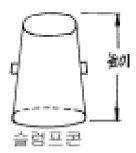
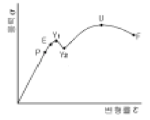

건설재료시험기능사 (2005-04-03 기출문제)
1과목: 건설재료
1. 공기 단축을 할 수 있고 한중 콘크리트와 수중콘크리트를 시공하기에 적합한 시멘트는?
- 조강포틀랜드 시멘트
- 중용열시멘트
- 보통포틀랜드 시멘트
- 고로 시멘트
(정답률: 70%)

2. 시멘트의 응결을 상당히 빠르게 하기 위하여 사용하는 혼화제로서 뿜어 붙이기 콘크리트, 콘크리트 그라우트 등에 사용하는 혼화제는?
- 감수제
- 급결제
- 지연제
- 발포제
(정답률: 92%)
3. 서중콘크리트 시공이나 레디믹스트 콘크리트에서 운반 거리가 멀 경우 혼화제를 사용하고자 한다. 다음 중 어느 혼화제가 적당한가?
- 지연제
- 촉진제
- 급결제
- 방수제
(정답률: 91%)
4. 플라스틱(plastic)제품의 좋은 점을 설명한 것 중 틀린 것은?
- 유기재료에 비해 내구성, 내수성이 양호하다.
- 표면이 평활하고 아름답다.
- 열에 의한 신축과 변형이 작다.
- 비중이 비교적 작고 가공과 성형이 쉽다.
(정답률: 91%)
5. 포졸란을 사용한 콘크리트의 영향 중 옳지 않은 것은?
- 시멘트가 절약된다.
- 콘크리트의 수밀성이 커진다.
- 작업이 용이하고 발열량이 증대한다.
- 해수에 대한 저항성이 커진다.
(정답률: 56%)
6. 목재의 장점에 관한 다음 설명 중 잘못된 것은?
- 재질과 강도가 균일하다.
- 온도에 대한 수축, 팽창이 비교적 작다.
- 충격과 진동 등을 잘 흡수한다.
- 가볍고 취급 및 가공이 쉽다.
(정답률: 65%)
7. AE 혼화제를 사용할 경우의 설명중 옳지 않은 것은?
- 콘크리트의 워커빌리티가 개선된다.
- 블리딩을 감소시킨다.
- 동결 융해의 기상작용에 대한 저항성이 적어진다.
- 같은 물-시멘트비를 사용한 일반콘크리트에 비하여 압축강도가 작아진다.
(정답률: 42%)
8. 니트로 글리세린을 주성분으로 하여 이것을 여러 가지의 고체에 흡수시킨 폭약은?
- 칼릿
- 초유폭약
- 다이너마이트
- 슬러리폭약
(정답률: 70%)
9. 다음 중 혼합 시멘트가 아닌 것은?
- 고로슬래그 시멘트
- 알루미나 시멘트
- 플라이애시 시멘트
- 포틀랜드 포촐라나 시멘트
(정답률: 71%)
10. 다음 화강암의 장점에 대한 설명으로 옳지 않은 것은?
- 석질이 견고하여 풍화나 마멸에 잘 견딜수 있다.
- 내화성이 크며 세밀한 조각 등에 적합하다.
- 균열이 적기 때문에 큰 재료를 채취할 수 있다.
- 외관이 아름답기 때문에 장식재로 쓸 수 있다.
(정답률: 56%)
11. 강을 용도에 알맞은 성질로 개선시키기 위해 가열하여 냉각시키는 조작을 강의 열처리라 한다. 다음 중 이 조작과 관계없는 것은?
- 성형
- 담금질
- 뜨임
- 불림
(정답률: 70%)
12. 골재의 밀도라고 하면 일반적으로 골재가 어떤 상태일때의 밀도를 기준으로 하는가?
- 노건조상태
- 공기중 건조상태
- 표면건조 포화상태
- 습윤상태
(정답률: 88%)
13. 아스팔트의 점도와 가장 밀접한 관계가 있는 것은?
- 비중
- 수분
- 온도
- 압력
(정답률: 70%)
14. 굵은 골재의 노건조 무게(절대건조무게)가 1,000g, 표면건조포화 상태의 무게가 1,100g, 수중무게가 650g 일 때 흡수율은?
- 10.0%
- 28.6%
- 15.4%
- 35.0%
(정답률: 50%)
15. 블론 아스팔트와 비교하였을 경우 스트레이트 아스팔트 특성에 관한 설명으로 옳지 않은 것은?
- 방수성이 좋다.
- 신도가 크다.
- 감온성이 크다.
- 내후성이 우수하다.
(정답률: 50%)
16. 굳은 콘크리트의 비파괴 시험 방법에 속하지 않는 것은?
- 방사선 투과법
- 슈미트해머법
- 공기량 측정법
- 음파 측정법
(정답률: 51%)
17. 흙 시료의 간극비가 0.9 이고, 흙의 비중이 2.60 이라할 때 포화단위무게(γsat)는 얼마인가? (단, 물의 단위무게는 1g/cm3 이다.)
- 0.857 g/cm3
- 0.972 g/cm3
- 1.452 g/cm3
- 1.842 g/cm3
(정답률: 23%)
18. 2μm이하의 점토함유률에 대한 소성지수와의 비를 무엇이라 하는가?
- 부피변화
- 선수축
- 활성도
- 군지수
(정답률: 64%)
19. 다음 그림에서 슬럼프 콘(Slump Cone)의 높이는 얼마인가?

- 10 cm
- 20 cm
- 30 cm
- 40 cm
(정답률: 89%)
20. 시멘트 비중시험에서 비중병을 실온으로 일정하게 되어 있는 항온수조 속에 넣고 광유의 온도차가 최대 얼마 이내로 되었을 때 광유표면의 눈금을 읽어 기록하는가?
- 1℃
- 0.5℃
- 0.2℃
- 0.⑤℃
(정답률: 57%)
2과목: 건설재료시험
21. 굵은 골재의 닳음 시험에 사용되는 기계기구가 아닌 것은?
- 데시케이터
- 로스앤젤레스 시험기
- 1.7mm 표준체
- 건조기
(정답률: 38%)
22. 다음 그림은 강(鋼)의 응력과 변형의 관계를 표시한 곡선이다. 외력을 제거해도 변형 없이 원래 상태대로 되는 한계점은?

- P
- E
- Y1
- U
(정답률: 72%)
23. 액성한계 시험에서 황동 접시를 1cm 높이에서 1초에 몇 회의 속도로 자유낙하 시키는가?
- 2회
- 3회
- 4회
- 5회
(정답률: 78%)
24. 흙의 다짐 정도를 판정하는 시험법과 거리가 먼 것은?
- 평판재하시험
- 베인(Vane)시험
- 현장 흙의 단위무게 시험
- 노상토 지지력비시험
(정답률: 46%)
25. 다음 중 골재의 체가름 시험에서 골재의 조립율을 나타내는데 적용되는 표준체의 규격이 아닌 것은?
- 50mm
- 20mm
- 10mm
- 1.2mm
(정답률: 70%)
26. 골재의 안정성 시험에 사용되는 용액으로 알맞은 것은?
- 황산나트륨용액
- 황산마그네슘용액
- 염화칼슘용액
- 가성소다용액
(정답률: 68%)
27. 신도시험으로 파악하는 아스팔트의 성질은?
- 온도
- 증발량
- 굳기정도
- 연성
(정답률: 64%)
28. 콘크리트 배합설계시 단위수량이 160kg/m3, 단위시멘트량이 320kg/m3 일 때 물-시멘트비는 얼마인가?
- 30%
- 40%
- 50%
- 60%
(정답률: 80%)
29. 액성한계 시험에서 낙하회수 몇 회에 상당하는 함수비를 액성한계라 하는가?
- 10 회
- 15 회
- 20 회
- 25 회
(정답률: 81%)
30. 흙의 수축한계 시험에서 수은을 사용하는 이유는 무엇인가?
- 정확한 시료의 무게를 구하기 위하여
- 정확한 시료의 부피를 구하기 위하여
- 정확한 시료의 밀도를 구하기 위하여
- 정확한 시료의 입도를 구하기 위하여
(정답률: 73%)
31. 액성한계와 소성한계 시험을 할 때 시료를 준비하는 방법으로 옳은 것은?
- 0.425mm체에 잔류한 흙을 사용한다.
- 0.425mm체에 통과한 흙을 사용한다.
- 0.075mm체에 잔류한 흙을 사용한다.
- 0.075mm체에 통과한 흙을 사용한다.
(정답률: 68%)
32. 흙의 함수비 시험에서 데시케이터 안에 넣는 제습제는?
- 염화나트륨
- 염화칼슘
- 황산나트륨
- 황산칼슘
(정답률: 62%)
33. 콘크리트의 배합에서 단위 잔골재량 700kg/m3, 단위 굵은골재량이 1300kg/m3일 때 절대 잔골재율은 몇 %인가? (단, 잔골재 및 굵은골재의 비중은 2.60이다.)
- 30%
- 35%
- 40%
- 45%
(정답률: 45%)
34. 아스팔트 침입도 시험에서 침입도의 단위로 맞는 것은?
- 0.001mm
- 0.01mm
- 0.1mm
- 1.0mm
(정답률: 69%)
35. 압축 강도시험용 공시체의 치수는 굵은골재의 최대치수가 50mm이하인 경우 원칙적으로 지름과 높이는 몇 cm로 하는가?
- ø10×30cm
- ø15×30cm
- ø20×35cm
- ø25×40cm
(정답률: 66%)
36. 다짐봉을 사용하여 콘크리트 휨강도시험용 공시체를 제작하는 경우 다짐횟수는 표면적 약 몇 cm2 당 1회의 비율로다지는가?
- 14cm2
- 10cm2
- 8cm2
- 7cm2
(정답률: 56%)
37. 시멘트 64g, 처음 광유 눈금 읽기가 0mL, 시멘트를 넣고 기포를 제거한 후 눈금 읽기가 21mL일 때 시멘트의 비중은 얼마인가?
- 3.⑤
- 3.10
- 3.15
- 3.20
(정답률: 58%)
38. 다음 중 시멘트의 응결시간을 측정하기 위한 시험기구는?
- 플로우 테이블
- 압축시험기
- 비카장치
- 진동기
(정답률: 67%)
39. 흙의 비중 시험에서 흙시료가 내포한 공기를 없애기 위해서 전열기로 끓이는데 일반적인 흙은 얼마 이상 끓여야 하는가?
- 1분
- 3분
- 5분
- 10분
(정답률: 82%)
40. 콘크리트의 압축강도 시험에서 시험용 공시체는 시험전 까지 일정한 온도에서 습윤양생을 해야 한다. 다음 중 옳은 양생온도는?(오류 신고가 접수된 문제입니다. 반드시 정답과 해설을 확인하시기 바랍니다.)
- 17℃ ± 3℃
- 19℃ ± 2℃
- 20℃ ± 3℃
- 27℃ ± 2℃
(정답률: 85%)
3과목: 토질
41. 아직 굳지 않은 콘크리트 표면에 떠올라서 가라앉은 미세한 물질을 무엇이라고 하는가?
- 블리딩
- 반죽질기
- 워커빌리티
- 레이턴스
(정답률: 67%)
42. 골재에 포함된 잔입자에 대한 설명으로 틀린 것은?
- 골재에 들어 있는 잔입자는 점토, 실트, 운모질등이다.
- 골재에 잔입자가 많이 들어 있으면 콘크리트의 혼합수량이 많아지고 건조수축에 의하여 콘크리트에 균열이 생기기 쉽다.
- 골재에 잔입자가 들어 있으면 블리딩 현상으로 인하여 레이턴스가 많이 생기게 된다.
- 골재 알의 표면에 점토, 실트 등이 붙어 있으면 시멘트풀과 골재와의 부착력이 커서 강도와 내구성이 커진다.
(정답률: 62%)
43. 아스팔트 연화점 시험에서 시료가 강구와 함께 시료대에서 얼마정도 떨어진 밑단에 닿는 순간의 온도를 연화점으로 하는가?
- 12.5㎜
- 25.4㎜
- 34.5㎜
- 45.4㎜
(정답률: 75%)
44. 석재의 비중 및 강도에 대한 설명중 틀린 것은?
- 석재는 비중이 클수록 흡수율이 크고, 압축강도가 작다
- 석재의 비중은 일반적으로 겉보기 비중을 말한다.
- 석재의 강도는 일반적으로 비중이 클수록, 빈틈율이 작을수록 크다.
- 석재는 흡수율이 클수록 강도가 작다.
(정답률: 57%)
45. 콘크리트 휨강도 시험용 공시체는 성형후 몇 시간내에 몰드에서 꺼내야 하는가?
- 7 ‾10시간
- 10 ‾15시간
- 16 ‾21시간
- 24 ‾48시간
(정답률: 58%)
46. 도로 포장 설계에 있어서 포장 두께를 결정하는 시험은?
- 직접전단시험
- 일축압축시험
- 평판재하시험
- C.B.R 시험
(정답률: 80%)
47. 기초 슬래브 최소폭 B＝2.0m이고, 기초의 깊이 Df=1.0m일 때 이것은 다음 중 어떤 기초로서 설계하는것이 가장 적당한가?
- 말뚝 기초
- 우물통 기초
- 케이슨 기초
- 직접 기초
(정답률: 49%)
48. 압밀 시험에 있어서 공시체의 높이가 2cm이고 배수가 양면배수일 때 배수거리는?
- 0.2cm
- 1cm
- 2cm
- 4cm
(정답률: 46%)
49. 연약한 점토 지반을 굴착할 때 하중이 지반의 지지력보다 크면 지반내의 흙이 소성 평형 상태가 되어 활동면에 따라 소성 유동을 일으켜 배면의 흙이 안쪽으로 이동하면서 굴착부분의 흙이 부풀어 올라오는 현상을 무엇이라고 하는가?
- 파이핑(piping)현상
- 히빙(heaving)현상
- 크리프(creep)현상
- 분사(quick sand)현상
(정답률: 62%)
50. 어떤 지반내의 한점에서 연직응력이 8.0t/m2이고, 토압계수가 0.4일 때 수평응력(σh)은?
- 2.2 t/m2
- 1.6 t/m2
- 3.2 t/m2
- 4.0 t/m2
(정답률: 55%)
51. 일축압축 시험을 한 결과, 흐트러지지 않은 점성토의 압축강도가 2.0kg/cm2 이고, 다시 이겨 성형한 시료의 일축압축강도가 0.4kg/cm2 일 때 이 흙의 예민비는 얼마인가?
- 0.2
- 2.0
- 0.5
- 5.0
(정답률: 54%)
52. 어떤 습윤흙의 무게가 500g일 때 이 흙의 함수비는 15% 이었다. 흙덩어리 속의 흙입자만의 무게는 약 얼마인가?
- 515g
- 485g
- 435g
- 419g
(정답률: 50%)
53. 흙덩어리를 손으로 밀어 지름 3mm의 국수 모양으로 만들어 부슬 부슬 해질 때의 함수비는?
- 소성도
- 수축한계
- 소성한계
- 액성지수
(정답률: 81%)
54. 흙을 다질 때 조립토일수록 어떻게 되는가?
- 최대건조단위중량과 최적함수비가 동시에 커진다.
- 최대건조단위중량과 최적함수비가 동시에 작아진다.
- 최대건조단위중량은 커지고 최적함수비는 작아진다.
- 최대건조단위중량는 작아지고 최적함수비는 커진다.
(정답률: 55%)
55. 통일 분류법에서 입도 분포가 좋은 모래를 표시하는 약호는?
- S.P
- S.C
- S.M
- S.W
(정답률: 69%)
56. 테르자기의 압밀 가정으로 틀린 것은?
- 흙은 자갈, 모래, 점토가 섞여 있다.
- 흙 속의 간극은 물로 완전히 포화되어 있다.
- 다르시(Darcy)의 법칙이 성립한다.
- 흙의 압밀도는 한 방향으로 일어난다.
(정답률: 27%)
57. 연경도에 대한 설명 중 틀린 것은?
- 유동지수가 클수록 유동곡선의 기울기가 급하다.
- 수축한계는 흙이 고체상태에서 반고체상태로 옮겨지는 경계의 함수비를 말한다.
- 액성한계는 소성상태에서 가장 작은 함수비를 말한다.
- 소성한계는 반고체상태를 나타내는 최대 함수비를 말한다.
(정답률: 40%)
58. 내부 마찰각이 30°인 흙에 수직 응력 18 ㎏/cm2을 가하였을 때 전단응력은 얼마인가? (단, 점착력은 0.12 ㎏/cm2이다.)
- 6.67 ㎏/cm2
- 8.85 ㎏/cm2
- 10.51 ㎏/cm2
- 13.68 ㎏/cm2
(정답률: 38%)
59. 다음 중 직접 기초에 해당하는 것은?
- Footing 기초
- 말뚝 기초
- 피어 기초
- 케이슨 기초
(정답률: 69%)
60. 흙의 다짐효과에 대한 설명으로 옳은 것은?
- 투수성이 증가한다.
- 압축성이 커진다.
- 흡수성이 증가한다.
- 지지력이 증가한다.
(정답률: 50%)